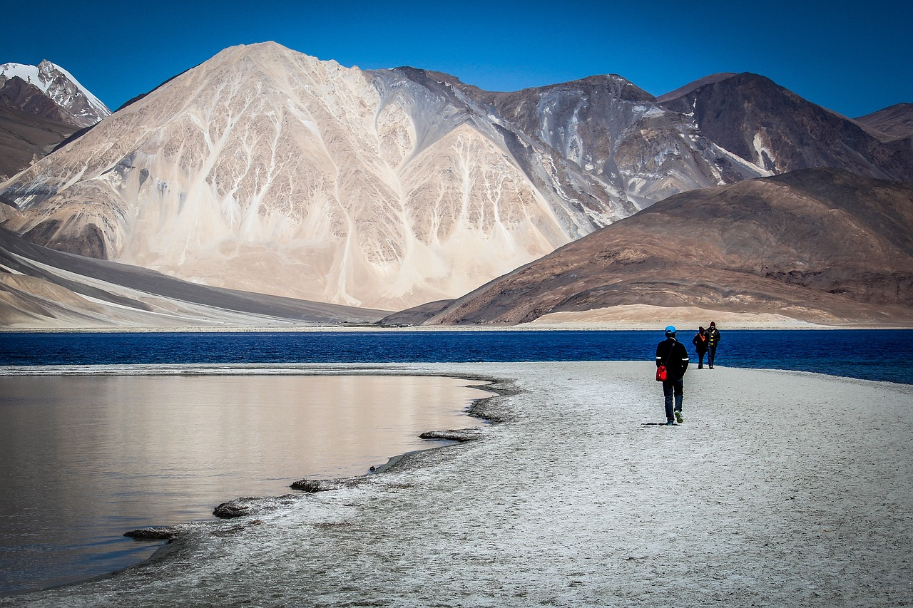
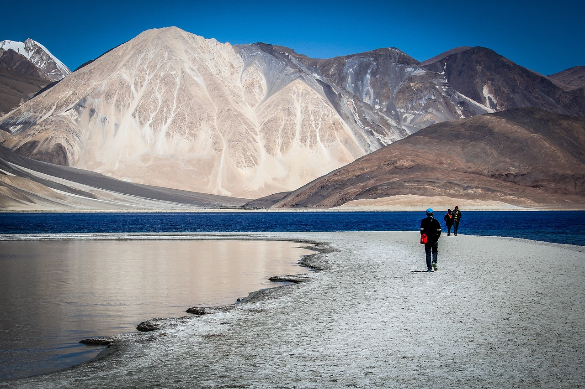
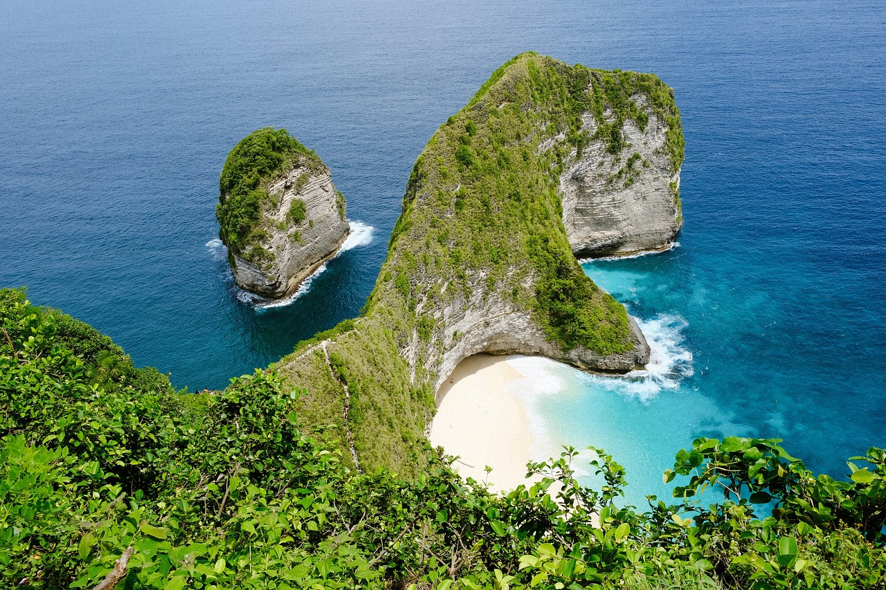
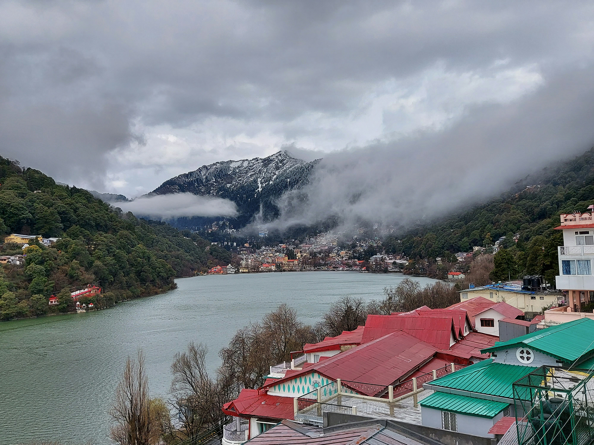

!Ladakh (Leh)!
Leh is the capital and largest city of Ladakh, a high-altitude desert region in India known for its stunning landscapes, rich Tibetan Buddhist culture, and adventure tourism. Historically, it was the capital of the ancient Kingdom of Ladakh, a status reflected in its architecture, particularly the Leh Palace, built in a similar style to Tibet's Potala Palace. Situated over 11,000 feet above sea level, Leh is accessible via major highways, such as the Manali-Leh Highway, and serves as a popular base for exploring the surrounding mountains, lakes, and monasteries. Visitors should be aware of altitude sickness and take precautions like acclimatization and hydration.

!Bali(Island of the Gods)!
Bali is a popular Indonesian island province, renowned as the "Island of the Gods" for its unique Hindu culture, stunning natural beauty with mountains and beaches, and vibrant spiritual atmosphere. It offers a rich tapestry of traditional crafts like silverwork, traditional arts, ancient temples, and a cuisine influenced by its Indian past. The island's geography, including Mount Agung, its highest peak, shapes its volcanic landscape and tropical climate. Bali attracts millions of tourists annually, drawn to its serene rice terraces, vibrant dive sites, luxurious accommodations, and the opportunity to experience its deep-rooted spiritual traditions and welcoming culture.

!Switzerland!
Switzerland is a mountainous, landlocked nation in Central Europe, renowned for its high quality of life, political neutrality, and multilingual society with German, French, Italian, and Romansh as official languages. Officially the Swiss Confederation, its landscape is divided between the Jura mountains, the central Swiss Plateau, and the majority-covering Swiss Alps. With a stable, modern market economy driven by banking, insurance, machinery, and high-tech industries, the country also boasts a sophisticated transportation system and exceptional natural beauty. Switzerland's culture is marked by a reputation for discretion, punctuality, and direct democracy, where citizens actively participate through referendums and initiatives, contributing to its diffusion of power and consensus-based governance.

!Nainital!
Nainital is a picturesque hill station in the Kumaon region of Uttarakhand, India, renowned as the "Lake District" for its numerous lakes, most notably the central Naini Lake, set in a pear-shaped valley amidst verdant hills. Founded by the British, who were drawn to its resemblance to the English Lake District, it developed into a popular summer retreat and has retained its colonial charm with elegant architecture. Key attractions include boat rides on Naini Lake, the Naina Devi Temple, the Mall Road, the Nainital Zoo, and the